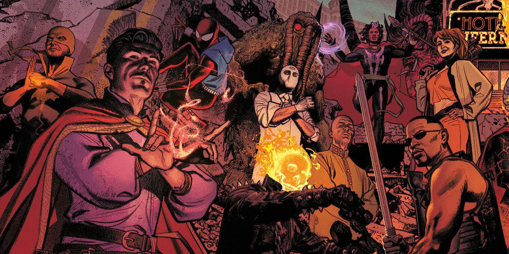

les années 70 création de plusieur personnages
BLADE1973
crée par / Marv Wolfman et Gene Colan
première apparition : Tomb of Dracula #10
un chassseur de vampires mi-homme, mi-vampire.Il annonce a l'entrée de marvel dans l'horreur.
Moon Knight (1975)
• Créé par : Doug Moench et Don Perlin
• Première apparition : Werewolf by Night #32
• Souvent comparé à Batman, mais avec un côté mystique et mental plus instable.
☯️ Iron Fist (1974)
• Créé par : Roy Thomas et Gil Kane
• Première apparition : Marvel Premiere #15
• Inspiré des films de kung-fu très populaires à l’époque.
🥋 Shang-Chi (1973)
• Créé par : Steve Englehart et Jim Starlin
• Première apparition : Special Marvel Edition #15
• Maître du kung-fu, il incarne l’influence asiatique dans les comics des années 70.
🦇 Ghost Rider (Johnny Blaze, 1972)
• Créé par : Gary Friedrich, Roy Thomas et Mike Ploog
• Première apparition : Marvel Spotlight #5
• Motard damné au crâne enflammé : icône de l’univers sombre et surnaturel.
😈 Thanos(1973)
• Créé par : Jim Starlin
• Première apparition : Iron Man #55
• Le grand méchant cosmique qui deviendra central dans les décennies suivantes.
💥 Luke Cage (1972)
• Créé par : Archie Goodwin et John Romita Sr.
• Première apparition : Luke Cage, Hero for Hire #1
• Premier super-héros afro-américain à avoir sa propre série. Représente l’influence de la blaxploitation.
